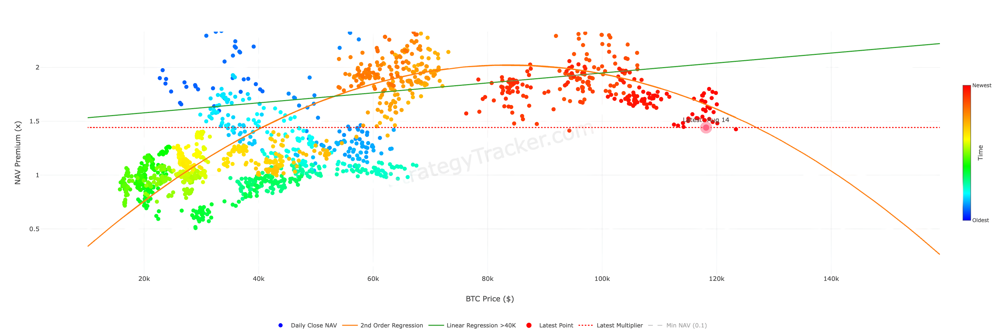
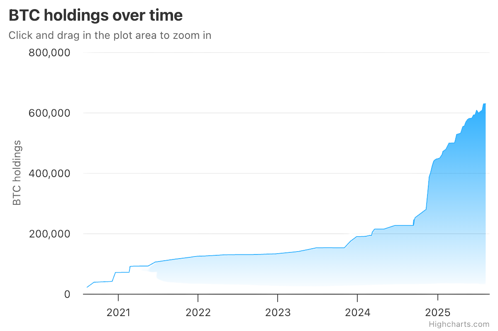
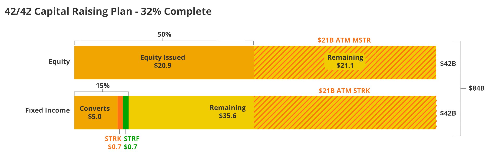
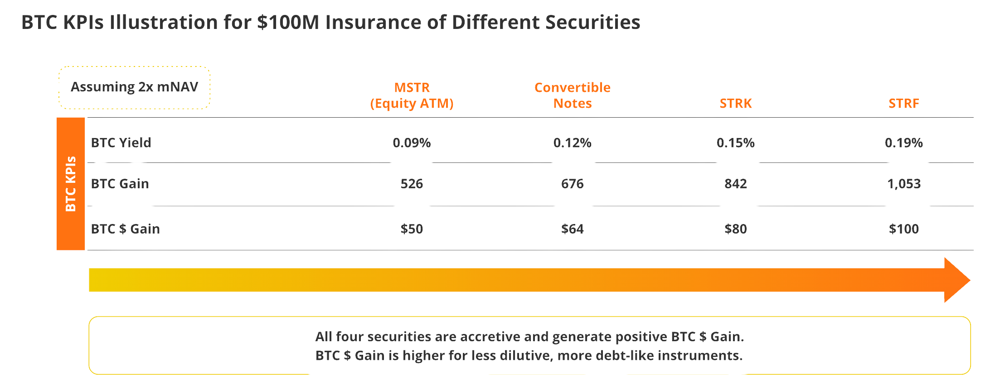
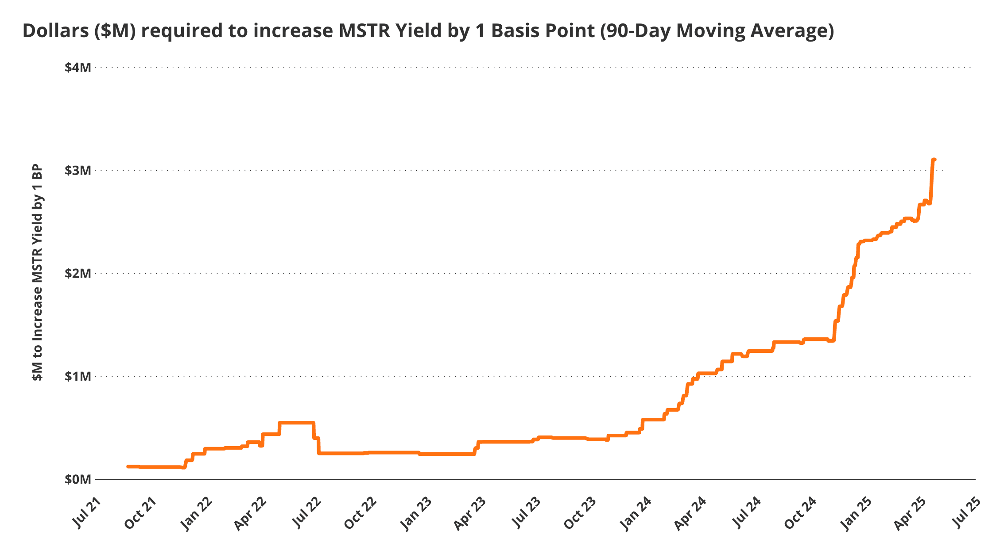

Digital Asset Treasuries （三）MicroStrategy 的普通股與 BTC Yield
上一篇文章中，我們 Cover 了 MicroStrategy 的兩大募資殺招：可轉債及特別股。而其第三招為發行普通股。但在那之前，我們先了解一下 MicroStrategy 的 mNAV 的概念：
mNAV#
mNAV 是 MSTR 訂出的一個新指標，算法是把整個 MSTR 的 Enterprise Value / Held $BTC Value，概念上有點類似於傳統估值的 P/B。其中分子的 Enterprise 定義如下：
- (A) + 全部已發行 MSTR 普通股（A 類 + B 類）的總市值 = 已發行股數 × A 類股在 Nasdaq 的收盤價
- (B) + 公司所有債務本金總額
- (C) + 公司所有永續優先股的名義總價值
- (D) − 公司最近一次披露的現金餘額
從這個公式可以看出，mNAV 大概可以解釋為「根據 MSTR 持有的 $BTC，市場願意給其估值的倍數」。目前 MSTR 的 mNAV 約為 1.64，而歷史上則約在 1-4 之間徘徊。此外，如 Strategy Tracker 這種網站也會用 NAV Premium （定義：MSTR market cap / Held $BTC value）的概念來評估 MSTR 的估值倍數：

但無論如何，我們可以看出市場在大部分時候都願意給 $MSTR 的估值一個相對大於其 $BTC 淨值的倍數。
Why Premium?#
一個自然的疑問會是，這些買 $MSTR 的人是傻了嗎？在極度簡化的假設下，假設 mNAV = 2，花 $2 買 $MSTR 約等同於你花 $1 直接去買 $BTC，如果目的只是為了 $BTC 的曝險，為什麼 Premium 存在？以及為什麼有傻子要花錢去買？
事情當然沒這麼單純，MSTR 的 Premium 長期存在本質上是市場均衡的結果，而其 Premium 存在主要有四個原因：
對未來持續收購 BTC 的預期#
市場給予 MSTR 的估值，不僅僅是它「當下」持有的比特幣價值，更是對它「未來」將持續收購更多比特幣的強烈預期。投資者相信 MSTR 會利用其融資能力不斷累積更多的比特幣。
因此，當前的溢價，可以被視為市場對 MSTR 未來更龐大比特幣資產的「折現價值 」。你買的不是 MSTR 現有的比特幣，而是它未來會擁有的、不斷增長的比特幣帝國的一部分。 
結構性的監管與通道溢價#
由於監管限制、投資授權或託管問題，許多機構和個人投資者無法直接購買或持有比特幣 。MSTR 作為一支在 NASDAQ 交易的普通股，完美地繞過了這些障礙，為這些被排除在外的資金提供了一個合規、流動性極高、且容易交易的比特幣代理工具 (attractive proxy for Bitcoin exposure) 。此外，對於有稅務或資本持有特殊要求的司法管轄區，投資一支股票也遠比直接持有比特幣來得單純。當然，隨著市場上 $BTC DAT 的數量增加，能夠被歸因到這個因素的 Premium 會越來越小。
Saylor 極為強大的募資能力#
市場願意支付溢價，有很大一部分是在為 Michael Saylor 無可複製的槓桿操作能力買單 。他證明了自己有能力以極低的利率籌集巨額資金，更關鍵的是，他的公司結構允許他在比特幣價格暴跌時（如 2022 年的熊市），能夠堅定地持有槓桿而不會像普通保證金交易員一樣被強制平倉 。投資者購買 MSTR，等於是付費參與了一個由專業人士管理的、具備強大抗風險能力的、普通人無法自行複製的比特幣槓桿策略 。
Premium 和強的募資能力互為因果#
第四點的標題寫的有點水，但想不到太好具象化的標題來完整闡述。我想表達的是，在可轉債、特別股那篇文章中，我們提過本質上 CB 是在販售波動率，而 MSTR 的波動率從根本上造就了其強大的募資能力；然而，強大的募資能力正是導致 MSTR 能夠在市場上有 Premium 的其中一個原因，而這造就了 MSTR 本身的波動率，兩者互為因果，互相成就，很難理清誰是因誰是果，更像是彼此本身就處於一種共生的狀態，因而創造了 MSTR 這種類似左腳踩右腳不斷上去的飛輪效應。
發行普通股#
理解了 MSTR 擁有 Premium 的現實，以及背後的原因後，現在可以來討論 MSTR 的第三種募資方式：發行普通股。
MSTR 發行普通股非常簡單理解：發行新的普通股直接用市價 (At-The-Market, ATM) 賣到市場，並用這些獲得的現金再購入比特幣。
MSTR 在 2024 年 10 月曾宣布其 21/21 的 Capital Plan：其將在 2027 年之前用 US$ 21B 的 MSTR 普通股，以及 US$ 21B 的可轉債、特別股來募集總計 US$ 42B 的資金來購入 $BTC。
截至 2025 年 5 月，其已經把全部 US$ 21B 的普通股增發完畢，而在可轉債、特別股的部分，其總共賣了 US$ 6.725B 的 CB 及特別股。2025 年 5 月的 earnings call 中，其宣布將 double down，在原本 21/21 的 capital plan 之上再開啟 42/42 的新計畫，大致的拆解以及進度如下： 
ATM 計畫玩的遊戲: Premium 套利#
上述提到，MSTR 在大部分的時候都因為多個因素相互牽引導致其有 Premium, i.e. mNAV > 1，而 MSTR 的 ATM 計畫的核心概念是「市價發行新的 $MSTR 股票，拿這些錢去買 $BTC」，仔細去想 mNAV 的概念，假設 mNAV = 2，隱含的意思是 MSTR 的企業價值是其持有的 $BTC 的兩倍，因此 **MSTR ATM 計畫本質上是在「賣一個市場估值較高的映像資產」後，再買入「市場估值較低的基礎資產」放入其 Balance Sheet。**當 mNAV 很高時，隱含市場對於 MSTR 的股票需求很高，而這時候 Michael Saylor 就會進來套利，賣自己的股票來買入更多 $BTC 來增加儲備。
當然，這樣的做法也並非毫無 downside，直觀地去想，隨著 MSTR 普通股增發，等於分同個資金池的分母變大，因此股價也會受到影響。因此，在最新 2025 年 7 月底的 earnings call 中，MSTR 正式宣佈其後 ATM 計畫將只在 mNAV 2.5 以上才會積極進行。
這些募資方式如何創造及影響 “BTC Yield”?#
以上，我們 cover 了 MSTR 的三種募資方式，而 call back 到 MSTR 的唯一北極星：創造 BTC Yield。首先，我們先複習一下 BTC Yield 的公式：
我們不妨來思考一下這三種募資方式會如何影響 MSTR 的 BTC Yield：
發行可轉債 (CB) 的影響：BTC Yield 📈 then 📉#
當 MSTR 成功發行一筆 CB 並將籌集到的資金用於購買比特幣時，公司的比特幣總量（分子）會立即增加，而流通股數（分母）保持不變。在這個階段，每股對應的比特幣數量會顯著上升。
然而，如我們在上一篇文章中分享的，大部分 MSTR 的 CB 目前都是 ITM (in-the-money) 的狀態，意即到期日時，這些投資者能夠用 Conversion Price 來轉換成 MSTR 的普通股，進而稀釋股本（分母變大），因此 upon conversion，MSTR 的 BTC per share 會下降。
發行特別股的影響：BTC Yield 📈 or 📈 then 📉#
發行特別股的當下狀況一樣單純，拿到當下的錢去買入 BTC, BTC per share 增加導致 BTC Yield 增加。但後續狀況則不一定，原因是：
- $STRF 單純為 10% 年利息的不可轉換特別股，並沒有增加普通股股數的選項，因此 BTC Yield 肯定增加
- $STRK 則為可轉換的特別股（行權價：$1,000），即使深度價外，若是被轉換則類似於 CB 後期的影響，會導致 BTC per share 的分母變大導致 BTC Yield 下降
發行普通股的影響：BTC Yield 📈#
發售普通股來買 $BTC 直觀會覺得分子分母同時變大，**但在 mNAV > 1 的情況下，發行普通股所帶來的 BTC Yield 一定會增加。**原因是因為 mNAV > 1 隱含的是 MSTR 的股票相對於 $BTC 是估值較貴的資產，出售一個較貴的資產並使用這些 proceeds 來購入較便宜的 base asset (i.e. $BTC)，我們能用國中數學證明在這樣的情況下 BTC per share 一定會成長。這邊就不展開這部分的數學證明。
分析完以上的影響後，我們也能稍微根據一些假設簡單試算出假設每籌資 US$ 100M，這些不同 instrument 對 BTC Yield 的影響： 
註：在撰寫文章的當下突然有一個腦洞（也許也是 realization）：MSTR CB 的行權價大多數是用現價 + 30% 去訂出來的，假設未來這些 CB 最後處於價內被行使，其實有點類似 MSTR 用 30% 的 Premium 去做 at-the-market 的普通股發售。而當然，普通股本身長期 mNAV 也 >1，因此是兩層 Premium 的疊加態？白話文講，假設 mNAV 為 2，CB Strike Price = 現價 * 1.3，那有點類似 Michael Saylor 實際上用 2.6X 的價格 dump 了 MSTR 普通股給 CB 買家。
BTC Yield 作為 Key Metrics 是不可持續的#
以上，我們了解了 MSTR 籌資的核心機制，以及其對自身北極星 metrics “BTC Yield” 分別的影響。然而，長期創造 BTC Yield 將會越來越昂貴，且高機率是不可持續的。目前，Michael Saylor 對於 2025 年的 BTC Yield 訂定的目標為 25%，然而，從下表我們可以看出每一個 basis point of BTC Yield 的成本，正在隨著 $BTC 的價格上漲，以及 MSTR 本身市值越來越大而不斷提高：

舉例來說，在 2021 年 8 月時，MSTR 只需要 2.6 $BTC 就能產生 1 basis point 的 BTC Yield；這數字在 2025 年 5 月已經飆升至 58 $BTC，而用美金計價的漲幅更是從 US$ 126K 飆漲至 US$ 5.5M。隨著 MSTR 的規模越來越大，我預測有兩種可能：
- BTC Yield 每年的目標必須不斷下修，直到長期達成某種 terminal rate
- 給股東畫的大餅改成「We’ve come a long way，我們持有以美金計價達 XYZ trillion 的 $BTC」，不再提 BTC Yield，而是再用這樣大的 Balance Sheet 去做各種新穎的金融操作來創造 USD Yield。